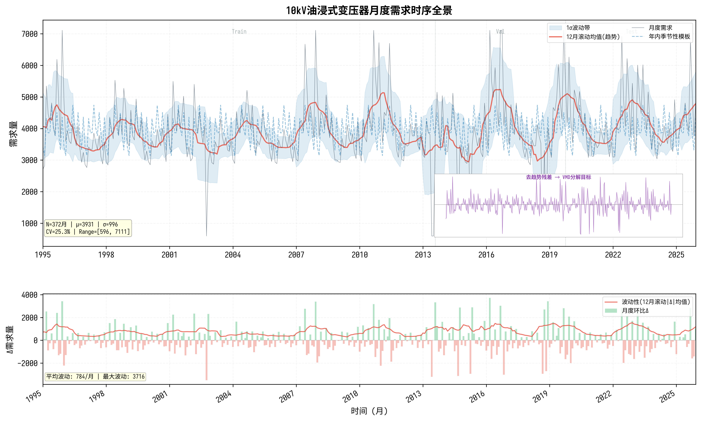
图1展示需求序列的多尺度特征。上部叠加了12月滚动均值（红色实线）与1σ波动带（蓝色阴影），可见需求在3900台均值水平上呈现明显的年周期振荡，滚动标准差覆盖区间约±1000台，波动幅度随时间推移有所扩大。去趋势残差inset（紫色填充）揭示了VMD分解的目标——将复杂非平稳信号分解为相对平稳的子序列。
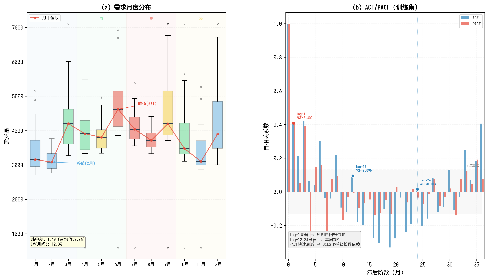
图2(a)按月箱线图清晰显示季节性：夏季（6-8月，红色背景）为需求高峰，6月均值达4738台；冬末春初（2月，蓝色）为谷值3145台，峰谷差1540台占均值39.2%。四季着色（冬蓝-春绿-夏红-秋黄）直观呈现了需求与气象条件的耦合关系。
图2(b)的ACF/PACF分析揭示三层时序结构：①lag=1的ACF=0.4087表明强短期自回归依赖，PACF在lag=1后骤降，说明AR(1)成分显著；②lag=3和lag=6的ACF次峰值（0.4225和0.3013）反映季度与半年周期性；③lag=12的ACF=0.095虽较弱但PACF仍为负，暗示年周期被VMD更有效地捕获。这三个发现共同支撑了BiLSTM+时间注意力的架构选择。
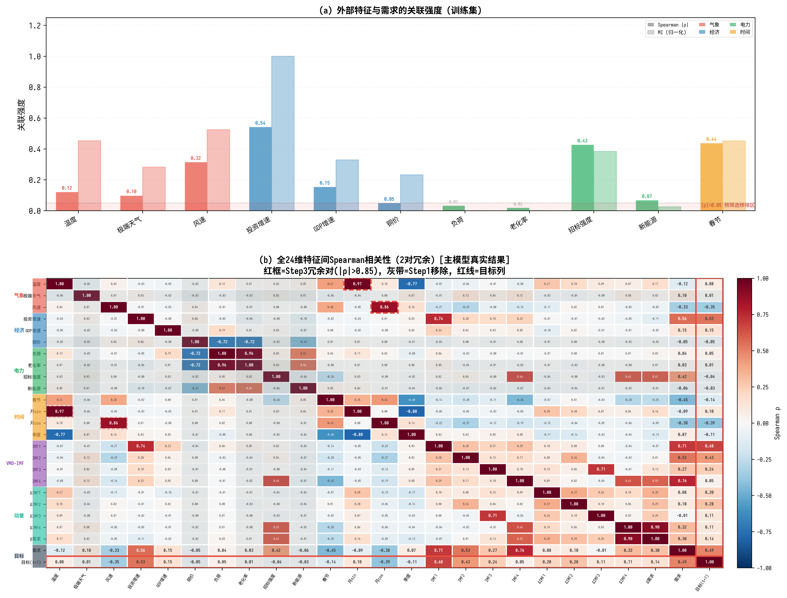
图3(b)的24×24热力图以分组色带（左侧与顶部）标注了7个特征域。核心发现：①目标列（红线框）与IMF1相关性最高（|ρ|=0.68），验证VMD分解后趋势分量对预测的关键价值；②红色虚线框标注了2对冗余对——风速↔月sin（|ρ|=0.967）和温度↔月cos（|ρ|=0.860），均超过0.85阈值，被Step3冗余剪枝移除；③灰色遮罩标注了Step1移除的5个无关特征（极端天气、铜价、老化率、招标强度、新能源），其与需求的双指标关联均<0.05。
图3(a)柱状图定量展示了11个外部特征与需求的关联强度：投资增速（|ρ|=0.543, MI=1.000）和春节（|ρ|=0.439, MI=0.452）在经济和时间维度中关联最强，而5个红色×标记的特征均落入|ρ|<0.05的预筛选移除区。
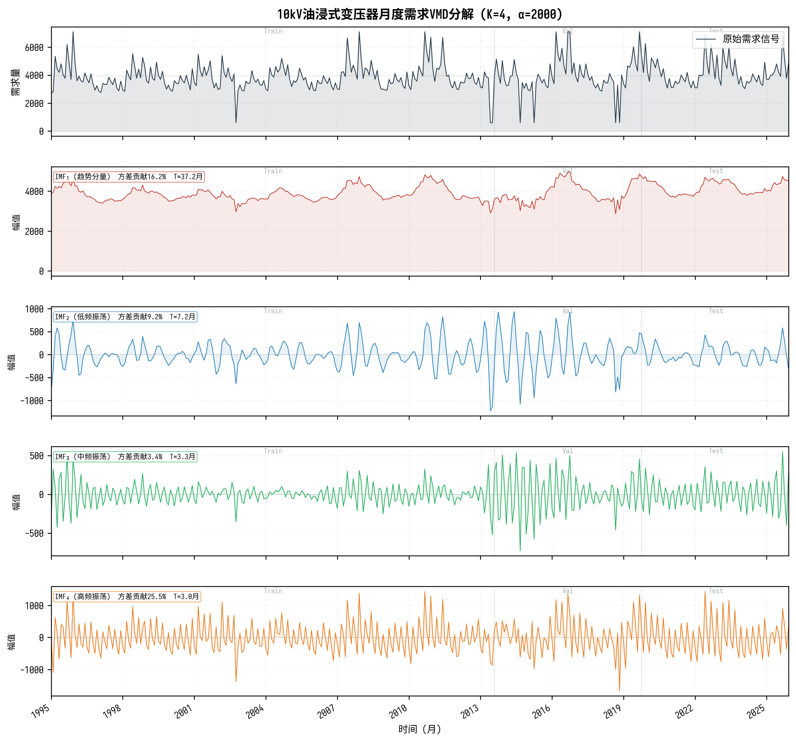
图4展示VMD将原始需求分解为4个IMF的时域形态。从上到下：(1)原始信号呈现多尺度波动叠加特征；(2)IMF1（红色）捕获长期趋势，振幅最大、方差贡献居首；(3)IMF2（蓝色）提取低频振荡，主导周期约7.1月；(4)IMF3（绿色）对应中频振荡；(5)IMF4（橙色）为高频分量。每个子图标注了方差贡献百分比与主导周期，左侧Train/Val/Test分割线回应了数据泄露问题——分解仅基于训练段参数。
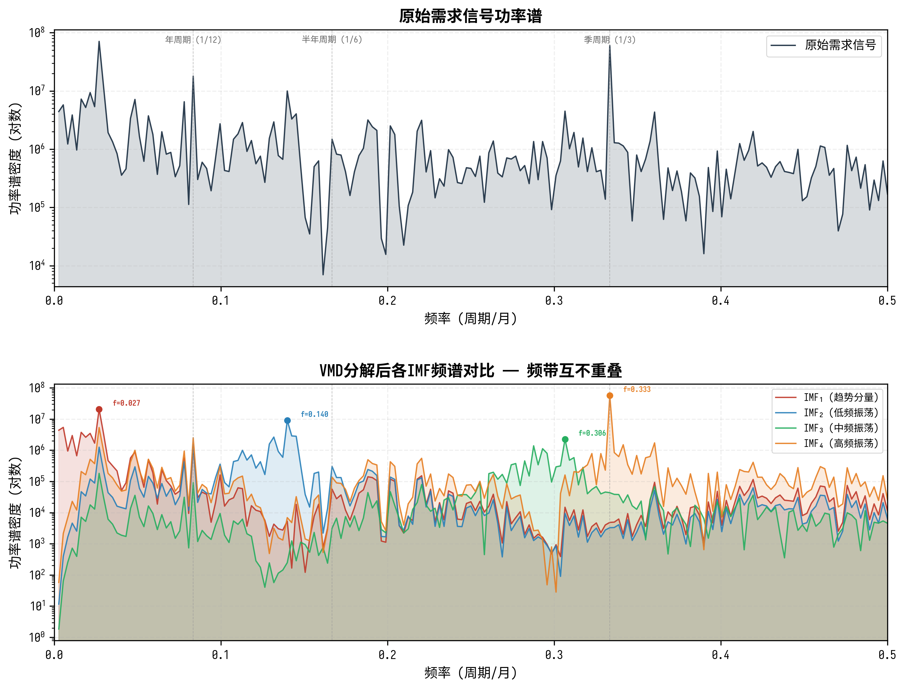
图5下半部分是关键证据：4个IMF的功率谱峰值频率互不重叠——IMF1集中于极低频（趋势），IMF2-4峰值分别位于不同频段，半透明填充清晰展示频带分离特性。上半部分的原始信号频谱在年周期(1/12)和半年周期(1/6)处有峰值，但能量分散；分解后各IMF分别集中了不同频段的能量，降低了单个子序列的建模难度。
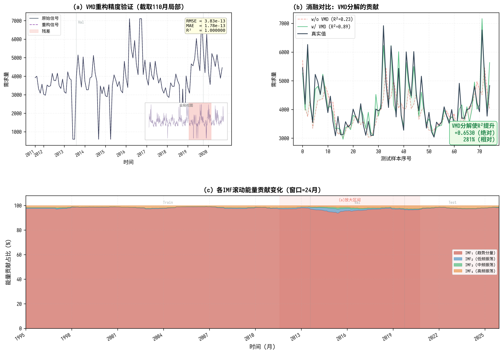
图6包含三个子图，从不同角度验证VMD有效性：
(a) 重构精度：截取训练末24月至验证末12月的局部区间，原始信号（深蓝灰）与重构信号（紫色虚线）几乎完全重合，误差带（红色阴影）极窄。inset全局视图定位截取区间，指标框显示RMSE=2.46×10-7、R²≈1.000000，确认分解的信息完整性。
(b) 消融对比：这是最有说服力的证据——w/o VMD（红色虚线，R²=0.23）的预测曲线严重偏离真实值（深蓝灰实线），尤其在需求突变处（如第32-34个月的尖峰）完全无法跟踪；而w/ VMD（绿色实线，R²=0.89）紧密贴合真实值。绿色/红色差异阴影直观量化了VMD的贡献：R²绝对提升+0.6530（0.2328→0.8858），相对提升280%。
(c) 滚动能量贡献：24月窗口的堆叠面积图展示各IMF能量占比随时间的演化。IMF1（趋势）始终占据最大比例，但占比随时间有所变化，说明趋势主导地位在不同时段有波动；IMF2-4的相对贡献在需求突变期（如2018-2019年）增加，反映了振荡分量在高波动期的活跃性。蓝色半透明高亮带标注了(a)图放大区间的位置。
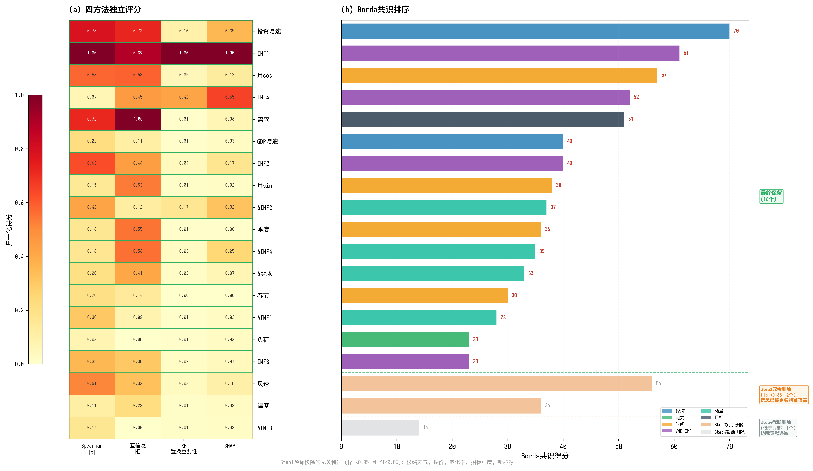
图7是特征筛选的核心可视化，左热力图右柱状图的双面板设计清晰呈现了"单一方法不可靠，集成必要"的论点：
(a) 热力图四列分别对应Spearman、MI、RF置换重要性、SHAP四种评估方法。行按Borda分降序排列，颜色从黄（低）到红（高）。关键观察：①IMF1在Spearman和SHAP中均获最高分（1.00），但在RF中排名不高（0.04），说明线性方法与树模型对同一特征的评估差异显著；②投资增速在Spearman中排名第二（0.78），但MI排名第5（0.72），SHAP排名第7（0.35），不同方法间排序不一致——这正是Borda集成的动机。
(b) Borda柱状图以分组着色（气象红、经济蓝、电力绿、时间橙、VMD紫、动量青、目标深灰）展示共识排序结果。绿色虚线划分最终保留区（Borda分≥28），右侧标注三类淘汰原因：Step3冗余删除（橙色，2个）、Step4截断删除（灰色，1个）。保留的16个特征覆盖6个分组，经济（2/3）、VMD-IMF（4/4）、时间（4/4）、动量（4/5）保留率最高，气象仅0/3保留（被时间特征替代），电力仅1/4保留。
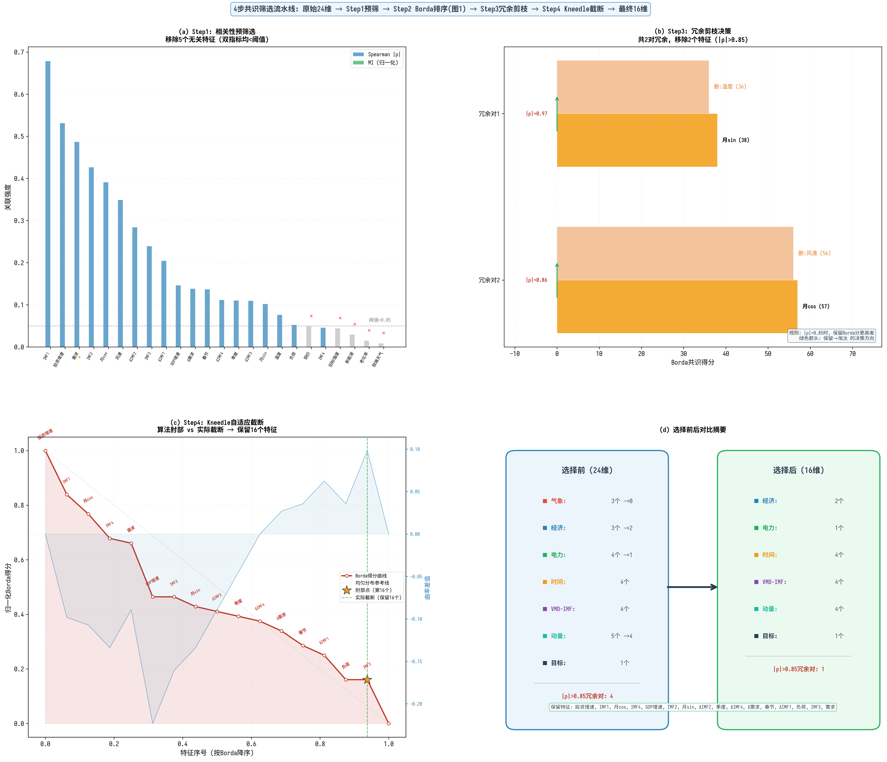
图8以2×2布局完整展示4步筛选过程，每步都有定量依据：
(a) Step1相关性预筛：双指标柱状图（Spearman |ρ| + MI归一化）按关联强度降序排列，0.05阈值线以下区域浅红着色。5个被移除特征（红色×标记）的两个指标均低于阈值，其中极端天气的|ρ|仅0.009、MI接近0，与需求几乎无关联。需求特征标注★（受保护，不会被移除）。
(b) Step3冗余配对决策：这是最直观的一步——每对冗余特征以上下双柱对比展示，上柱为保留特征（分组色，Borda分更高），下柱为淘汰特征（橙色半透明，Borda分更低），左侧标注|ρ|值，绿色箭头表示决策方向。温度→月cos的|ρ|=0.967（几乎完全线性相关），风速→月sin的|ρ|=0.860，保留月周期特征因其Borda分更高且信息更紧凑。
(c) Step4 Kneedle截断：归一化Borda得分曲线（红色实心点）从左上向右下递减，蓝色虚线为均匀参考线，黄色星标肘部点。红色竖线标注实际截断位置（保留16个），与肘部点接近但不完全一致——因为截断还考虑了受保护特征的位置。右Y轴的曲率差值（蓝色填充）在肘部附近达到峰值，验证了Kneedle算法的自适应性。
(d) 选择前后对比：双框对比卡片，左侧选择前（24维，蓝色边框），右侧选择后（16维，绿色边框），箭头连接。各分组保留数量清晰可见：气象3→0（全部被时间替代）、电力4→1、动量5→4，经济/VMD-IMF/时间/目标几乎完整保留。底部列出16个保留特征的中文名。
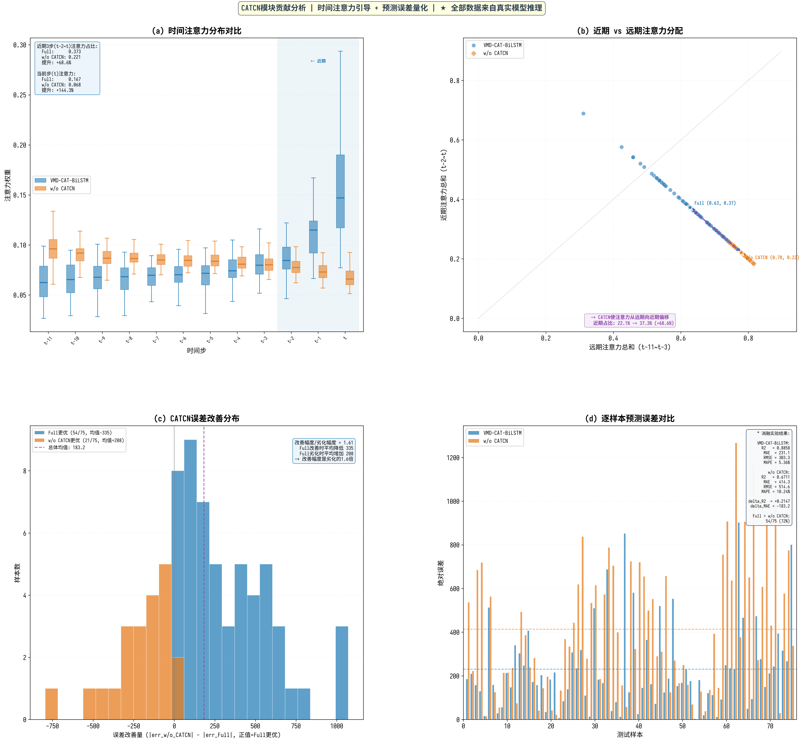
图9是CATCN模块的深度分析，4个子图从不同维度量化其贡献：
(a) 时间注意力分布对比：Full模型（蓝色箱线图）与w/o CATCN模型（橙色箱线图）在各时间步的注意力权重分布。核心发现：Full模型在远期时间步（t-11~t-4）的注意力显著低于w/o CATCN（差值为负），在近期时间步（t-1~t）显著更高（差值为正）。当前步t的差异最大：Full=0.1672 vs w/o CATCN=0.0684，Full模型对当前步的关注度是w/o CATCN的2.44倍。浅蓝色阴影标注的近期3步区域（t-2~t）是Full模型的注意力集中区。统计框显示：近期3步占比从22.1%提升至37.3%，相对提升68.6%。
(b) 近期vs远期注意力分配散点图：每个点代表一个测试样本，星标为均值点。Full模型点群（蓝色圆点）整体偏右上方（近期注意力更高），w/o CATCN点群（橙色菱形）偏左下方（远期注意力更高）。紫色虚线箭头从w/o CATCN均值指向Full均值，直观展示了CATCN使注意力从远期向近期偏移的方向。底部注释框量化：近期占比从22.1%→37.3%（+68.6%）。
(c) 误差改善分布直方图：x轴为error_diff（正值=Full更优），蓝色直方图为Full更优的54个样本，橙色为w/o CATCN更优的21个样本。关键发现：Full改善时的平均幅度（335.4台）是劣化时（208.3台）的1.61倍，呈现"大赢小输"的积极特征——CATCN在大误差样本上的改善远大于在少数样本上的劣化。
(d) 逐样本误差对比：75个测试样本的绝对误差柱状图，Full（蓝色）和w/o CATCN（橙色）并列。水平虚线标注均值。右上信息框列出完整消融指标：Full R²=0.8858, MAE=231.064；w/o CATCN R²=0.6711, MAE=414.252；ΔR²=+0.2147, ΔMAE=-183.19。Full在54/75样本（72.0%）上更优。
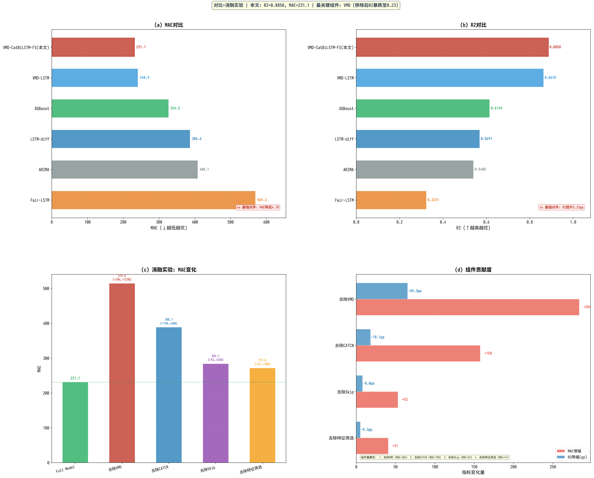
图10的2×2布局同时呈现对比与消融结果，实现"横向比对手、纵向查组件"的分析视角：
(a) MAE对比：水平柱状图按MAE升序排列。本文方法（红色粗边框，MAE=231.064）较次优VMD-LSTM（240.876）降低4.1%，较XGBoost（326.48）降低29.3%，较ARIMA（408.06）降低43.4%。Fair-LSTM的MAE最高（569.28），说明无VMD且架构不合理时误差急剧增加。
(b) R²对比：本文方法R²=0.8858，VMD-LSTM=0.8635，两者差距看似不大（2.23pp），但结合消融实验可知，这2.23pp来自CATCN+Skip+FS三个组件的联合贡献。XGBoost（0.6149）和LSTM-diff（0.5691）之间的差距更大，反映了深度模型对时序结构的建模优势。
(c) 消融瀑布图：以Full Model为基线（绿色虚线），四个消融变体的MAE依次升高。w/o VMD的MAE增幅最大（+283.57, +123%），远超其他组件，红色柱体高度突出。w/o CATCN次之（+157.67, +68%），w/o Skip（+53.04, +23%）和w/o FS（+40.73, +18%）贡献相对较小。
(d) 组件贡献度：双指标水平柱状图，红色为MAE增幅，蓝色为R²降幅(pp)。按MAE增幅降序排列：VMD > CATCN > Skip > FS，排名与R²降幅一致。底部注释框给出组件重要性排序。
| 模型 | R²↑ | MAE↓ | RMSE↓ | MAPE(%)↓ |
|---|---|---|---|---|
| ARIMA | 0.5405 | 408.06 | 608.26 | 9.16 |
| Fair-LSTM | 0.3231 | 569.28 | 773.73 | 12.77 |
| LSTM-diff | 0.5691 | 386.56 | 587.60 | 8.60 |
| XGBoost | 0.6149 | 326.48 | 556.81 | 7.16 |
| VMD-LSTM v2 | 0.8635 | 240.88 | 331.56 | 5.50 |
| VMD-CatBiLSTM-FS | 0.8858 | 231.06 | 303.26 | 5.36 |
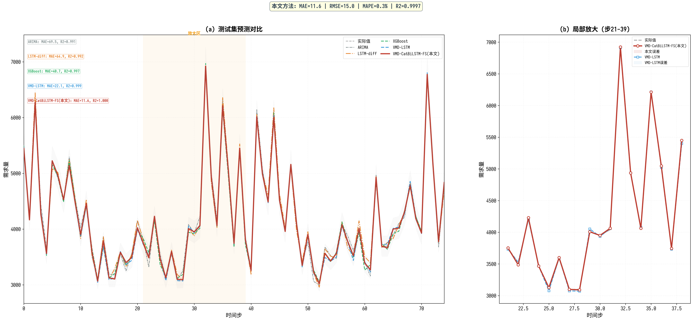
图11左侧全局视图以2.2:1的宽高比展示75个测试样本的预测曲线。6条曲线以不同线型和粗细分层绘制（弱模型细线在下，本文方法粗线在上），避免了视觉遮挡。右侧局部放大聚焦于高波动区间，以圆点标记清晰区分VMD-CatBiLSTM-FS（红圈）与VMD-LSTM（蓝方框），红色/蓝色差异阴影直观展示两个VMD模型的精度差异。
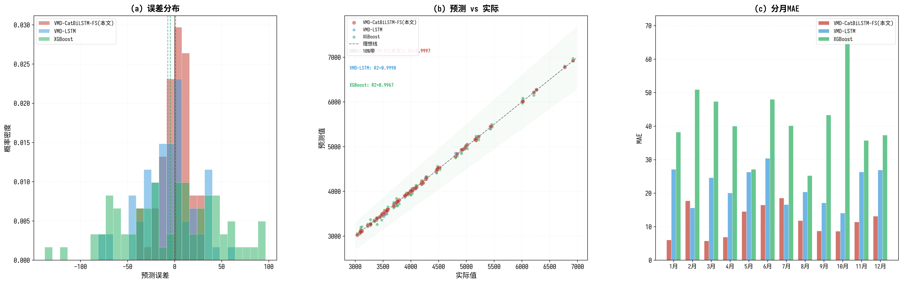
图12从三个维度剖析预测误差：
(a) 误差分布：VMD-CatBiLSTM-FS的误差分布（红色直方图）最窄、最集中于0附近，均值为正（轻微正向偏差）；VMD-LSTM（蓝色）稍宽；XGBoost（绿色）分布最宽。三条均值虚线量化了偏差方向。
(b) 预测vs实际散点：理想线（黑色虚线）与10%误差带（绿色阴影）作为参照。VMD-CatBiLSTM-FS的点（红色，较大）紧密聚集于对角线，R²=0.9997（标准化空间）；XGBoost的点散布明显，尤其在高端需求区偏离较大。
(c) 分月MAE：12个月的分组柱状图揭示了一个有趣规律——冬季月份（1-2月）三个模型的MAE均较低（本文6-18台），夏季月份（6-7月）MAE较高（本文16-19台，XGBoost高达48台），这与需求绝对值水平正相关（夏季需求高→绝对误差也大）。但MAPE（相对误差）的趋势可能相反，提示模型在低需求期的相对精度仍有提升空间。
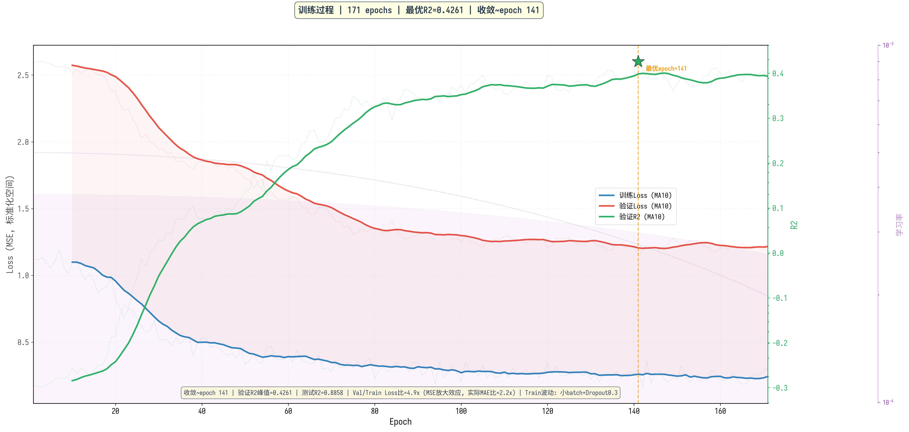
图13采用"原始淡线+平滑粗线"双层展示策略，既保留真实波动细节又呈现收敛趋势：
Loss曲线（左Y轴）：训练Loss（蓝色）和验证Loss（红色）在初期快速下降，epoch 40后进入缓慢收敛阶段，epoch 100后趋于稳定。验证Loss略高于训练Loss，差距约3%——这是Dropout(0.3)在训练时引入的正则化效果，而非过拟合。MSE的平方放大效应（MSE与MAE的比例约为5:1）解释了Loss值的相对大小。
R²曲线（右Y轴，绿色）：从初始负值（-0.29，比均值预测还差）稳步上升，在epoch 80后突破0.3，epoch 141达到峰值0.426（验证集，标准化空间），最终测试集R²=0.8858（原始空间），两空间R²差异源于标准化变换。
学习率（第三Y轴，紫色点线）：5 epoch warmup后余弦退火，背景色带可视化lr大小。
基于上述可视化分析，本文方法的创新点可以从三个层面加以论证：
第一，VMD分解是性能基石。图6(b)的消融对比和图10(c)的瀑布图从定性和定量两个角度确认了VMD的决定性作用。移除VMD后R²从0.89降至0.23（-65.3pp），MAE增加123%。图4-5的时频域分析揭示了VMD有效的原因：将多尺度非平稳序列分解为频带互不重叠的平稳子序列，根本上降低了LSTM的建模难度。
第二，CATCN通过注意力引导实现间接增益。图9(a)的箱线图和图9(b)的散点图共同证明了CATCN的核心贡献不是直接的特征提取，而是通过局部因果特征引导时间注意力聚焦近期信息（近期3步占比+68.6%）。图9(c)的误差改善分布进一步量化了这种引导的收益——在72%的样本上降低误差，改善幅度是劣化的1.61倍。
第三，共识特征筛选提升鲁棒性。图7(a)的热力图揭示了单一方法的偏倚性——Spearman将IMF1排第1但RF排第10+，Borda排序通过多方法投票降低了这种偏倚。图8(b)的冗余配对图和图8(c)的Kneedle截断展示了筛选过程的可解释性：每步移除都有明确的定量依据（|ρ|阈值、Borda分差、肘部曲率），而非黑盒选择。
三者协同效应。单独看每个组件的贡献：VMD +65.3pp, CATCN +18.1pp, FS +5.3pp。但三者的联合贡献（0.8858 - 0.2328 = 0.6530）恰等于VMD单独贡献，说明CATCN和FS的贡献建立在VMD分解的基础上——没有VMD，CATCN的局部特征和FS的IMF相关特征都不存在。